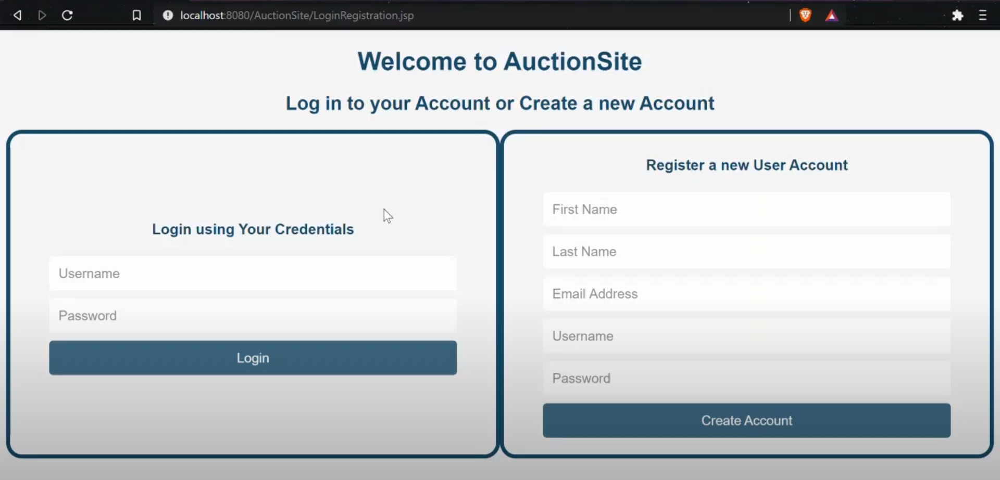
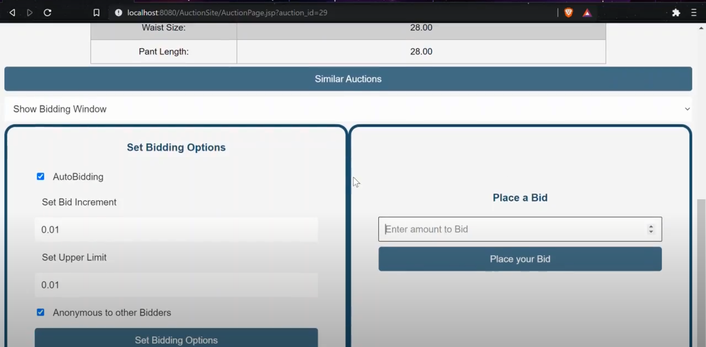

Data Dynamics
In the Auction Website Database Project, my role was pivotal in defining the database schema and implementing the project using a combination of HTML, CSS, JavaScript, and MySQL. The following details provide a comprehensive insight into my contributions and the significance of those actions in the context of the project:
I took the lead in defining the database schema, meticulously structuring the tables, relationships, and constraints. This involved a thoughtful analysis of the project requirements to ensure that the database could efficiently store and retrieve data. By carefully designing the schema, I aimed to optimize data organization and accessibility, laying the foundation for a robust and scalable database system.
Within the database schema, I designed individual tables to represent different entities within the Auction Website. These tables were interconnected through well-defined relationships, capturing the inherent connections between various data elements. Additionally, I imposed constraints to maintain data integrity and enforce business rules. For instance, defining primary and foreign keys, unique constraints, and ensuring referential integrity were crucial aspects of my contribution.
The project was implemented using a technology stack that included HTML, CSS, JavaScript for the front-end, and MySQL for the backend. I actively engaged in the development of the user interface using HTML and CSS to create a visually appealing and user-friendly design. JavaScript was employed to enhance interactivity and user experience on the client side. On the server side, MySQL was utilized to interact with the database, allowing for seamless data manipulation.
The meticulous design of the database schema ensured that data could be managed efficiently. Properly normalized tables and well-defined relationships reduced redundancy and improved data consistency. The structured schema and thoughtful constraints provided a scalable and flexible foundation. This was essential for accommodating potential future expansions or modifications to the Auction Website without compromising performance.The implementation of HTML, CSS, and JavaScript contributed to the creation of a user-friendly interface. This aspect was crucial for enhancing the overall user experience and facilitating smooth navigation on the Auction Website.The imposition of constraints and adherence to best practices in database design aimed at maintaining data integrity. This not only ensured accurate and reliable information but also contributed to the security of the system by preventing unauthorized or inconsistent data modifications.
In summary, my involvement in the Auction Website Database Project extended beyond the surface level of technology implementation. It delved into the core aspects of database design, ensuring efficiency, scalability, data integrity, and a positive user experience. Through these contributions, I played a key role in establishing a solid foundation for the Auction Website's database system, aligning it with best practices and industry standards.